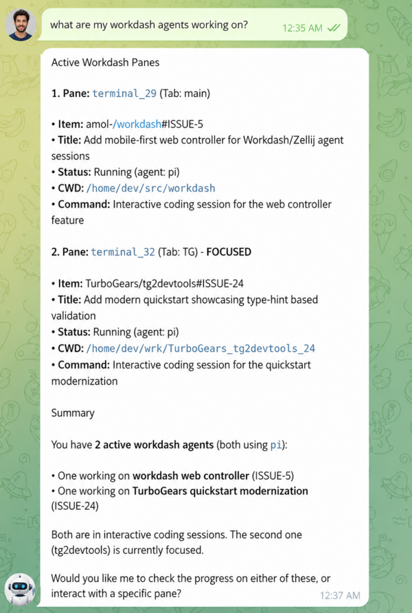

⚡
workdash
Your work and your agents, together
Coordinate with your agents in a development environment you own. Share tasks, context, and terminal panes, without giving up your editor or your tools.

Coordinate with your agents in a development environment you own. Share tasks, context, and terminal panes, without giving up your editor or your tools.
Your GitHub work stays in one list, whether you tackle it yourself or involve an agent.
See your issues, authored pull requests, and review requests across repositories. Read a work item, ask for an analysis, then start coding in its worktree. Pick up your work →
Delegate a work item, watch your agent's pane, and send input when you need to intervene. Review the result yourself, or use the dispatch loop to implement and review ready work. Follow the dispatch loop →
Let agents and scripts inspect and act on the same dashboard
through the CLI. The supplied workdash-control
skill offers optional instructions, not a required integration.
Use the CLI →
You and your agents use the same work items, worktrees, and panes instead of separate workflows.
Text is the common language, inspired by Unix pipes. Zellij is the coordination bus: workdash sends text into a pane and reads text back. You can inspect and interact with that same pane yourself.
An assistant using the CLI can inspect and interact with the
same work. Use the pane ID from workdash info in
place of PANE_ID:
workdash info
workdash read PANE_ID
workdash write PANE_ID "Run the tests before continuing."You read what the agent printed, then send it text as input. How it responds depends on the tool running in that pane.

Install with uv to put workdash on your
PATH in an isolated environment.
uv tool install workdashConfigure your GitHub account, repositories, agents, and working directory through the setup wizard.
workdash --configureStart your dashboard in Zellij, then keep it running while you use the CLI.
workdashYou can run workdash on Linux or macOS with the following tools.
gh with gh auth login so
you can access your repositories.
zellij for the dashboard, terminal panes,
and agent sessions.
ptyxis, konsole, Ghostty,
or any terminal that runs Zellij well.
xdg-open on Linux or open on macOS
for GitHub links and external links from documents.
claude,
codex, pi, or another compatible command.
code to launch VSCode Copilot from the code menu.
The setup wizard can install local copies of gh and
zellij if you do not have them.